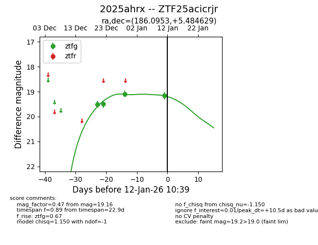
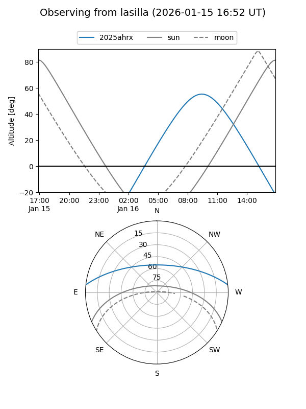
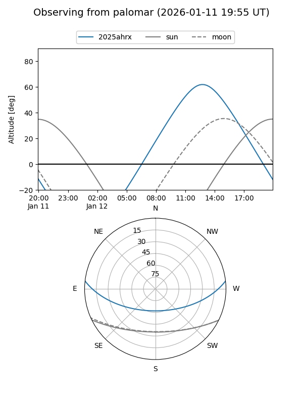
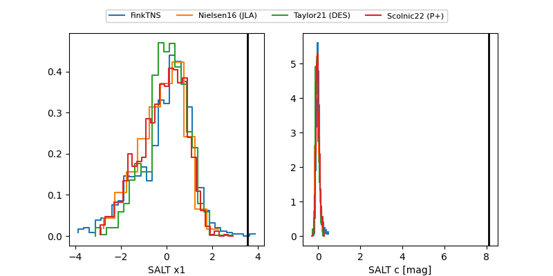

2025ahrx
Target 2025ahrx at 2025-12-31 17:00
Aliases and brokers:
FINK:
Lasair:
ALeRCE:
TNS:
YSE:
alt names
ZTF25acicrjr (ztf,fink_ztf)
2025ahrx (tns,yse)
Coordinates:
equatorial (ra, dec) = 186.0953,+5.48463
equatorial (HMS+DMS) = 12:24:22.88,+05:29:04.67
galactic (l, b) = (285.1548,+67.41778)
Flags:
Photometry:
last ztfg=19.09
3 ztfg detections
Lightcurve

Visibility


Additional plots
